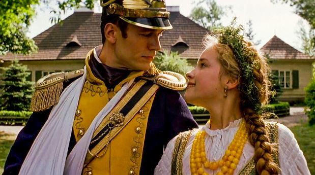
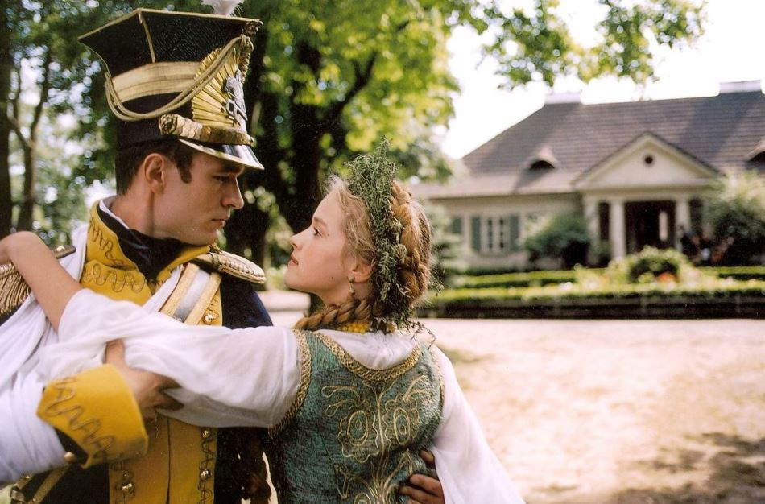

Bootstrap'em zabawy...
Adam Mickiewicz prezentuje:
Treści Bonusowe
Pan Tadeusz (Wikipedia)
Ekranizacja z 1999 (Filmweb)
Ekranizacja z 1928 (Filmweb)
Księga 13 (Wikipedia)

Spis treści
Strona Główna (Index)
Księga 1: Gospodarstwo
Księga 2: Zamek
Księga 3: Umizgi
Księga 4: Dyplomatyka i łowy
Księga 5: Kłótnia
Księga 6: Zaścianek
Księga 7: Rada
Księga 8: Zajazd
Księga 9: Bitwa
Księga 10: Emigracja. Jacek
Księga 11: Rok 1812
Księga 12: Kochajmy się
Pan Tadeusz, czyli ostatni zajazd na Litwie:
historia szlachecka z roku 1811 i 1812
we dwunastu księgach wierszem
